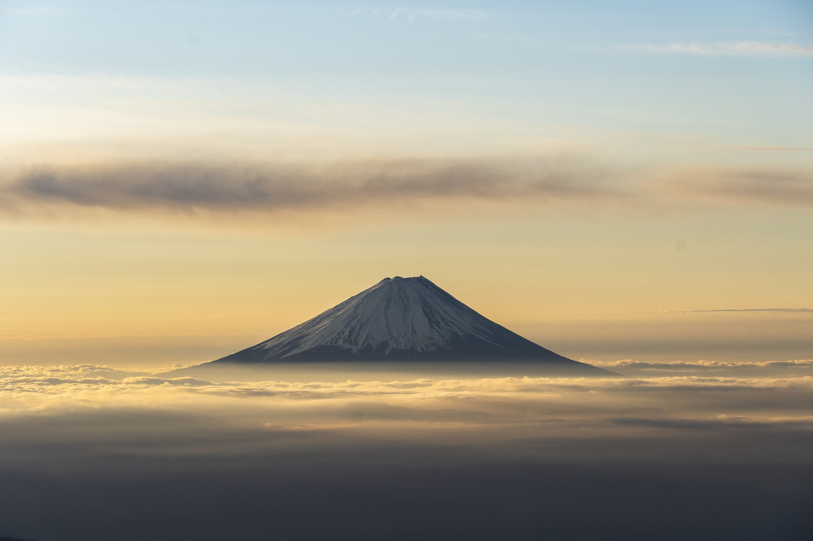
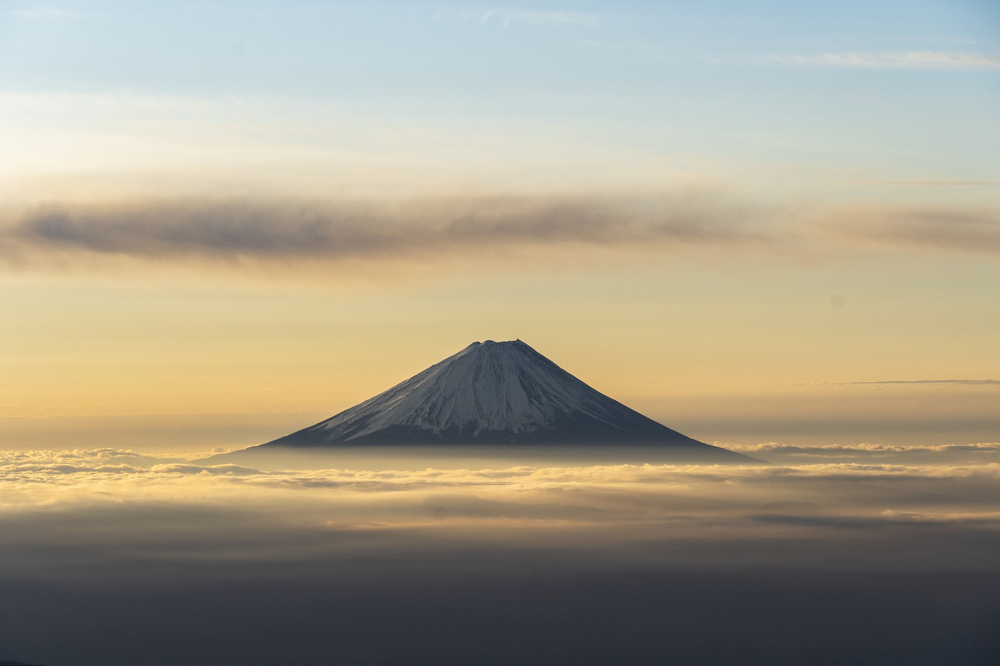
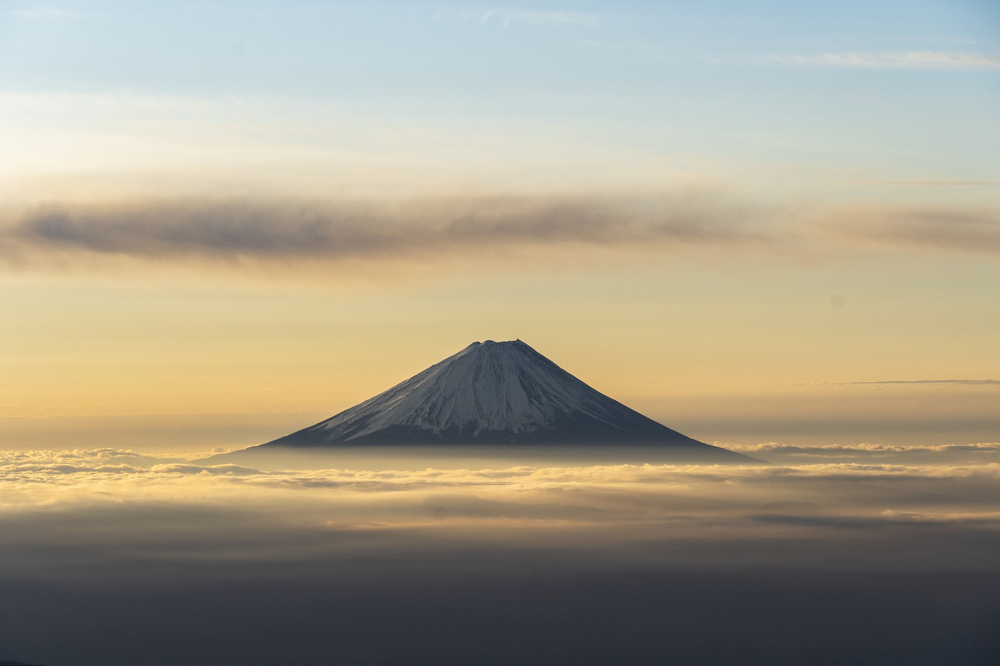

Una meraviglia geografica, formatosi circa 100.000 anni fa, le ripetute eruzioni vulcaniche hanno gradualmente trasformato il Monte Fuji nella più imponente montagna del Giappone, alta 3.776 metri. L'ultima eruzione, avvenuta nel 1707, durò 16 giorni e la cenere vulcanica arrivò fino alla città di Tokyo.
Nel corso dei secoli, i giapponesi hanno forgiato un legame spirituale con la montagna. Una leggenda narra che l'asceta religioso Hasegawa Kokugyo (1541-1646) abbia scalato la montagna più di 100 volte. Le sue imprese hanno condotto alla formazione del Fuji-ko, un gruppo di adoratori del Monte Fuji. La setta, per mostrare la sua dedizione, ha costruito santuari, creato monumenti rupestri e digiunato. Il fanatismo mostrato dalla setta condusse lo shogunato di Tokugawa a vietare la religione, ma nonostante ciò, la lunga tradizione di questo culto giapponese ha fatto sì che la montagna rimanesse venerata e consacrata come luogo di grande importanza spirituale.
Il Fushimi Inari Taisha è il principale santuario dedicato al kami Inari, situato a Fushimi-ku, a Kyōto in Giappone. Il santuario si trova alla base di una montagna chiamata anch'essa Inari, che è a 233 metri dal livello del mare e che comprende diversi sentieri verso altri santuari minori.
Il nome di questo santuario deriva dal dio shintoista del riso e dei raccolti: Inari. Oggi viene considerato anche il patrono dei commercianti e degli affari, per questa ragione viene venerato spesso da gente d’affari e imprenditori che sperano di ottenere il successo nelle loro attività.
Nei santuari dedicati a Inari è molto comune incontrare statue raffiguranti delle volpi: questo perché, tradizionalmente, si ritiene che questi animali siano i messaggeri di Inari. Le volpi possono essere raffigurate in svariati modi: talvolta stringono tra le fauci una chiave, che rappresenta le chiavi dei depositi del riso.
In tutto il Giappone esistono più di quattromila santuari dedicati a questa divinità.
Il santuario di Itsukushima è un santuario shintoista che si trova sull'isola di Miyajima, nella città di Hatsukaichi, in Giappone. Il sito è inserito nell'elenco dei Patrimoni dell'umanità dell'UNESCO, nonché tesoro nazionale del Giappone
Nel santuario si venerano tre divinità (Ichikishimahime-no-mikoto, Tagorihime-no-mikoto, Tagitsuhime-no-mikoto).
Queste tre divinità sono principesse discendenti direttamente da Amaterasu Ōmikami, la dea del sole e dal fratello Susanoo-no-mikoto.
Si crede che Amaterasu sia la principale divinità imparentata alla famiglia imperiale del Giappone.
In effetti, la parte della famiglia imperiale di Hiroshima era fortemente convinta del legame di sangue con queste divinità.
Già anticamente erano venerate in Giappone per favorire il benessere della famiglia imperiale, dei marinai e del paese stesso.
La leggenda narra che nel 593 – anno in cui l’imperatrice Suiko salì al trono – le divinità stavano cercando un luogo migliore dove stabilirsi.
Saeki no Kuramoto, governatore dell’isola ricevette un messaggio divino e assieme alle divinità, cominciò a navigare attorno all’isola e decise di costruire un santuario dove la marea scorre e si abbassa.
Il Parco di Ueno è uno storico parco di Tokyo, tra i più antichi e famosi del Giappone. E’ situato nell’omonima area di Ueno. Al suo interno sono presenti numerosi musei e templi, oltre allo Zoo. Inoltre questo parco è molto famoso per l’Hanami, ovvero la fioritura dei ciliegi.
Il Parco di Ueno nacque sui terreni appartenuti al tempio Kan’ei-ji, a nord del castello di Edo. Nel 1868 la maggior parte degli edifici che componevano il tempio furono distrutti durante la guerra Boshin. A seguire l’area divenne, in parte, proprietà della città di Tokyo. Infine nel 1924, il parco fu completamente donato dall’imperatore Taisho e alla città e prese il nome ufficiale di “Ueno Onshi Kōen”, ovvero “Parco dono imperiale di Ueno”.
L’Okunoin è forse il luogo più mistico e sacro di tutto il Giappone, un posto indimenticabile che evoca appieno la spiritualità del buddhismo e porta alla luce leggende e miti giapponesi. Qui è situato il mausoleo di Kobo Daishi (il fondatore del Buddhismo Shingon ed una delle persone più venerate del Giappone) che si dice non sia mai morto, ma semplicemente sia in meditazione eterna in attesa dell’arrivo di Miroku Nyorai, il Buddha del futuro. Nel frattempo, Kobo Daishi provvede a dare sollievo a coloro che chiedono la salvezza.
Secondo un'antica superstizione della scuola buddista shingon, non esistono morti nell’Okunoin, ma solo degli spiriti in attesa. Leggenda vuole che un giorno, Kukai (774-835),meglio conosciuto in Giappone sotto il patronimico di Kobo Daishi, il fondatore della comunità religiosa del Monte Koya, uscirà dal suo stato di meditazione quando Miroku, il Buddha del futuro, scenderà sulla Terra.
Solo allora, tutte le anime in transito che riposano nelle sculture, o i cui capelli e le ceneri sono state poste dai parenti davanti al mausoleo di Kukai, si incammineranno al suo seguito. Aspettando l’avvento di questo profeta apocalittico, il numero di tombe non smette di aumentare.